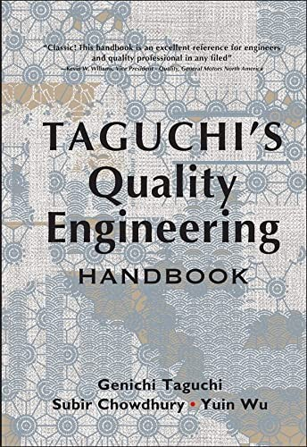
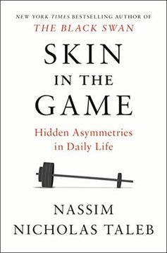

Módulo 05 / Apartado 4 de 5
Que aguante: Taguchi y la robustez
Por qué «dentro de tolerancias» es una idea falsa y qué se pone en su lugar. La función de pérdida, el diseño robusto y su traducción a problemas que no son de fábrica: los procesos de alta variabilidad y los procesos golem.
Una definición que parece obvia y es falsa
Pregunta: ¿qué es una pieza de calidad? Respuesta estándar: una que está dentro de tolerancias. Si la especificación dice 10 milímetros más menos 0,5, todo lo que caiga entre 9,5 y 10,5 es bueno y lo de fuera es malo. Dentro del rango, da igual dónde caiga.
Genichi Taguchi (1924-2012), ingeniero y estadístico japonés, dedicó su carrera a demostrar que eso es falso, y a formalizar por qué. Su definición alternativa es rara la primera vez que se lee y luego no se te olvida:
La calidad es la pérdida que un producto causa a la sociedad desde el momento en que se entrega.
Fíjate en lo que hace esa frase: convierte la calidad en algo continuo y le pone signo negativo. No hay un umbral que se cruza. Cualquier desviación del valor objetivo cuesta, y cuesta más que proporcionalmente conforme te alejas. La curva es una parábola, no un escalón.
Y esto tiene una traducción organizativa inmediata. En cuanto un criterio se convierte en un umbral, la organización optimiza para pasar el umbral por los pelos — que es exactamente la peor zona de la parábola. Objetivos de venta, acuerdos de nivel de servicio, plazos, ratios de calidad: todos producen el mismo comportamiento. Cumplir el 95% pactado y ni un punto más es una decisión racional dentro de un sistema mal diseñado.
La segunda idea, que es la que se exporta
El diseño robusto. Taguchi separa los factores que afectan a un resultado en dos clases, y la separación es sencilla y potente:
- Factores de control
- Los que tú puedes fijar. El material, el ajuste de la máquina, la temperatura del horno, el diseño del proceso. Decides su valor y se queda ahí.
- Factores de ruido
- Los que no puedes controlar, o cuyo control sería carísimo. La humedad ambiente, el desgaste, la variación entre unidades, lo que haga el cliente con el producto.
El enfoque ingenuo es perseguir el ruido para eliminarlo: aire acondicionado, salas blancas, controles. El de Taguchi es otro y es el que hay que retener: ajustar los factores de control de manera que el sistema se vuelva insensible al ruido.
No haces que el entorno deje de variar. Haces que la variación del entorno deje de importar.
En un problema complejo no controlas el entorno: ni a los actores, ni el ciclo político, ni el mercado, ni quién va a estar en ese puesto dentro de un año. Perseguir ese control es la trampa.
La pregunta correcta es: ¿qué diseño de solución aguanta que el entorno se mueva? Y su recíproca, que es la que hay que escribir en el informe: ¿qué tendría que ser cierto en el entorno para que esto funcione?
Si la lista de condiciones necesarias es larga, tu solución no es robusta por mucho que la puntuación de Kepner-Tregoe haya salido alta. Una recomendación que solo funciona si todo sale según lo previsto no es una recomendación, es una apuesta.

El libro de esto Taguchi's Quality Engineering HandbookEl tratado completo, y es un ladrillo de mil seiscientas páginas. Para entender el método basta con Introduction to Quality Engineering (1986), mucho más corto. Aviso: el aparato original —matrices ortogonales, ratios señal-ruido— es diseño de experimentos industrial y los estadísticos llevan décadas discutiéndolo. No traslades la maquinaria a un problema social. Traslada las dos ideas: la pérdida es continua, y la robustez frente al ruido vale más que el control del ruido — Genichi Taguchi, Subir Chowdhury y Yuin Wu · 2004
Y ahora la versión de la casa: los PAV
Recuenco tiene un concepto propio que es el primo hermano de todo esto y que aparece por todo el corpus con sus siglas: PAV, procesos de alta variabilidad. Dice que se lo introdujo Sylvia Díaz-Montenegro y que es uno de los aspectos más ignorados en escenarios de complejidad.
Un PAV es un proceso donde la variabilidad no es un defecto que corregir, es la naturaleza del asunto. Y su ejemplo de cabecera: cualquier proceso que interactúe con humanos, porque el humano es —dice— el sistema complejo primigenio.
La tesis fuerte de la turra es que llevamos incrustada del taylorismo una dicotomía falsa:
Lo que une esto con Taguchi es directo: un PAV es un sistema con un factor de ruido enorme e inevitable, que es la persona que hay al otro lado. Intentar eliminar esa variabilidad —guiones, procedimientos rígidos, «el sistema no me deja»— es perseguir el ruido. Diseñar para que la variabilidad deje de romper el proceso es diseño robusto.
Y de ahí sale un aviso que Recuenco repite: los procesos de cambio cultural son un PAV de libro. Cualquiera que los trate como un plan de despliegue con hitos se va a comer un golem.
Dónde entra Taguchi en la secuencia
Al final, y sobre la solución ya elegida. No es una herramienta de análisis, es una prueba de resistencia. En el caso práctico, cuando ya tengas tu recomendación y la tabla de Kepner-Tregoe firmada, añade la pregunta de Taguchi:
Personas que pueden irse, presupuestos que pueden recortarse, normativa que puede cambiar, competidores que pueden reaccionar.
Explícitamente y en una lista. Es humillante y es lo más útil que vas a escribir.
Si son más de tres, tienes una apuesta. Si son una o dos y son plausibles, tienes una recomendación.
Cambia el alcance, la secuencia o las dependencias hasta que la lista se acorte. Eso es diseño robusto, y es todo lo que hay.
Fuentes de este apartado
Las turras de las que sale
La turra de los PAV, y la que Recuenco dedica a Sylvia Díaz-Montenegro, que le introdujo el concepto. Arranca con un ejemplo espinoso —por qué es imposible escribir una ley del aborto satisfactoria— y de ahí saca la falsa dicotomía entre gestionar el contexto y escalar. Introduce los procesos golem y remata diciendo que un proceso de cambio cultural es un PAV de manual.
La gestión de lo desconocido en CPSTurra · 45 tweets · nov 2022Se cruza con este apartado por el lado de la incertidumbre en la entrada, no en el entorno. Sirve para ver la diferencia: Taguchi te protege de que el entorno se mueva; esta turra va de qué haces cuando ni siquiera sabes qué estás metiendo en el sistema.
Los libros
El tratado. Mil seiscientas páginas y no hace falta leerlas: para el método basta Introduction to Quality Engineering (1986). Quédate con la función de pérdida y con la separación entre factores de control y factores de ruido, que se trasladan a cualquier cosa. La maquinaria estadística no se traslada, y el propio corpus estadístico lleva décadas discutiéndola.

Skin in the GameNassim Nicholas Taleb · 2018Aquí como puente al apartado siguiente. La robustez de Taguchi es de diseño; la de Taleb es de incentivos: un sistema aguanta cuando el que decide sufre las consecuencias. Son la misma idea aplicada a dos capas distintas del mismo problema, y las dos hacen falta.